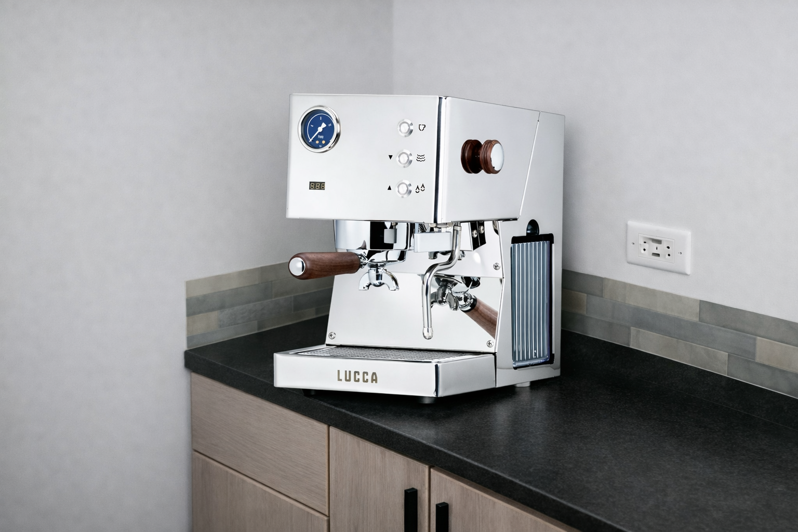

One spot on the counter. I’ll keep it that way.
I live here too. I think as a resident of this household I should get to have at least a little counter space—one spot. I’m not asking for the whole kitchen. I’m asking for one small place that’s mine, and I’ll take care of it. I think that’s fair.

Note: Image not actual sized. Enlarged to show detail.One defined spot. The machine I’m looking at (LUCCA Tempo) is 10.25″ × 13″ — under 1 square foot. You can verify the numbers below.
LUCCA Tempo — compact, 10.25″ × 13″. One spot. Clive Coffee.